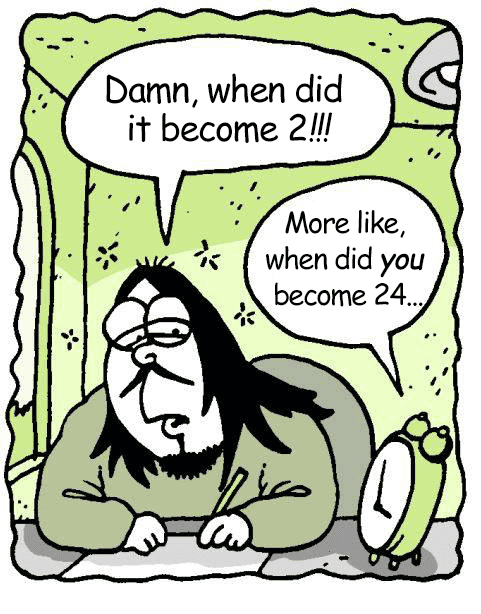
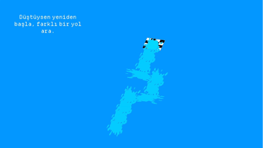

Today marks two years since I made my first indie game.
Ever since long ago, I wanted to have somewhere like a blog, or journal, to share my thoughts, rant, and just write stuff.
So, today I am celebrating my journey so far, and I hope to share some of that journey with you here.

Sure did feel like 2.
Gonna sound a bit cliche, but English isn’t my first language, so bear with me if I make mistakes.
You can call me Knight. When it comes to game dev, I want to be as anonymous as possible, since I feel more brave about sharing my games with you this way. I don’t want who I am to overshadow my work.
Since this is the first post, let me tell you a bit about myself.
I have always loved games, since I was a little kid. Until the second year of high school, I never thought about a future that I could be making games. I played
Life is Strange around that time, and I was very impressed. I spent months waiting for new episodes, and I even cried at the end.
After that, I decided that I would make games as well. I wanted to make games that people would play and think “Wow, that was something”. A game that impresses you so much, that you can’t stop thinking about it even days after finishing.
Of course that’s very ambitious thinking, but I thought I would at least try. I made “working to make the best games ever” my motto, and I work everyday with the same mindset. As they say,
"Shoot for the moon. Even if you miss, you'll land among the stars."
So I studied computer engineering to basically learn how to code (it’s same as computer science), and I’ve been working as a solo indie game dev since I graduated.
If it's your first time on my page, you can check out my previous works from
itch.io
The first year of indie game dev was more about learning. I made four mobile games that weren’t really bad, but were nonetheless failures.
All the mobile games I made. In chronological order.
I participated in my first physical game jam. The theme was serious, and jury didn’t even understand my game. That was a really terrible experience.
I even did all of the pixel art by myself.
I failed and failed. Spending time and effort on something and seeing that it failed is really hard to overcome. But as time passed, I’ve accepted failure as a nature of game development. It is definitely a risky field. If you fail, you need to accept that and move on to next game.
Looking back, I think it became easier to overcome that feeling of failure.
All the other games I made that year. A very productive year for me.
But of course, game dev is not all about suffering (though it might seem that way sometimes).
I personally, can’t play horror games. As a kid, I was terrified of even
Spider-man. I can’t bear the idea that something might jumpscare me at any moment. So I haven’t been interested in horror games before. But since I’m on the “indie grounds” now, I saw and decided to watch some indie horror games.
They were not what I expected. I was expecting something silly like
Slenderman or
Outlast (they might have good stories too, I don’t know much), but what I found was much more interesting games with mysterious and exciting stories.
I liked the work of creators like
Puppet Combo,
Chilla’s Art. But my favorites would probably be
Manny’s from Bonemeal Productions and
Fears to Fathom: Ironbark Lookout from Rayll.
Suddenly a fast food restaurant appers at a deserted island, how cool is that?
I love the vibes of this game, so great.
The stories in these kind of games weren’t really perfect, but again, nothing really is. They were all charming in their own way, and they looked like just what I needed to make, in order to impress people the way I wanted.
With the aim of achieving that, I started to work on my first horror game,
Intruder.
The story was simple with an interesting twist. It definitely lacked in certain areas, but I was happy with the result. It looks so simple to make, but in reality, the last 2 weeks I worked on it were really rough. It felt like I was just blinking through the days, as I kept working on the computer. The final steps can be especially tiring.
The hour I published the game, there were about 3 downloads, and 2 donations (?!). I was increadibly happy that people liked it, and even decided to pay for it, just out of kindness. It felt like the first time people acknowledged my efforts, and that can be the main driving force for a game dev.
What happened after that was kinda beyond my imagination. People kept downloading and posting their gameplay videos under it. I even made a private album for all the videos, it has over 500 videos by now. The game made it to the top 3 of “most popular”, right next to
Buckshoot Roulette and
That’s Not My Neighboor. Even
CaseOh played it in one of his streams. I didn’t know about him before, but after watching, I thought that he was very kind and supportive. It was also very fun, I still watch his videos to learn about new games.
Intruder, in my eyes, was a big success. As I was still feeling high from success, I took a little break that was not actually so little. I joined a few game jams and stuff, but I think success made me quite lazy.
The second year of my game dev journey started with me developing a new game:
Recycle Factory Simulator. I started making this game on a whim, but looking back now, I can see that I got a lot of work done.
Progress images for Recycle Factory Simulator
I started learning Blender, and I can use it really easily now! Before graduating college, I tried to learn it for a school project, and it felt really hard (damn you knife split tool). After learning Unity for 2 years, I realize that I can learn other programs with similar 3D-space layout more easily now.
After working on it for a while, I kinda got bored with what I was making. So I decided to take a little break from it, and focus on another horror game instead. I don’t like pausing from a project, but it felt like I lost some of the passion I had for that game. I am hopeful that the passion will come back after I finish this next project.
You can wishlist it from
here if you'd like to.
Around the same time, I got into a non-thesis Game Technologies Master’s program. There was actually a thesis program at a well-known university, but I couldn’t apply to it since It hadn’t accepted applications for the last 5 (?!) years. (They definitely wouldn’t have accepted me if I’d applied back then anyway)
Funnily enough, when the second semester was starting, the other program announced that they were going to accept 10 people into the program! I took a paper exam. There were 10 people in the room (I thought it would be more), and I was one of the 3 people that was selected (Thanks to what I learned in the non-thesis program).
In the end, since I was already doing a non-thesis program, I decided not to spend any more time at school, so I didn’t register to the thesis program. Making that decision was really hard, but I need all the time I can spare for making games, so I’m content with it.
By the way, I took 6 classes at the first semester, unaware that I would have to take the final exams for all of them on the same day (lol), so I finished my degree in two semesters, Actually, I just graduated a few days ago!
I wanted to be done with school as fast as possible, because I realized that I can’t really focus on game dev, when I have literally anything else to do. It’s like when you have an appointment at 5 PM, so instead of getting any other work done, you just wait for it to be 5 PM. Actually I just searched it, it’s called “Waiting Mode”, and apparently a symptom of ADHD. Not sure if I have it, but it’s really bothersome sometimes. I think I’m just lazy.
Portal prototype I made for midterm exam. I also modelled it myself.
Progress gifs for my final project.
Aside from school, I participated in another local physical game jam around December.
The development process was really hard, as I couldn’t stay overnight at jam venue (I participate solo, so no reason for me to stay). So I kept going back and forth between home and venue, while working on the game.
I also didn’t know that I’d have to do a public presentation. Everyone looked so calm and relaxed while doing theirs, while I was waiting very, very anxiously, and for some reason I was really hungry (?!). I was so nervous, I couldn’t remember what I said afterwards. Turns out I’m not cut for public speaking, but I got it done somehow.
I thought I bombed it, but while I was waiting, some people told me that they really like my game. I was super happy, and I made some friends. It was great to be surrounded by like-minded people.
And to my surprise, I got third place! While I was waiting for jury to announce to winners, I kept thinking “I hope I get the third place”. There were other good games too, so I thought third place would be fair.

Here I am on the right, receiving the award on stage. The next image is the game.
Technically it was just the third place at some small competition, but I am very happy with the result. I still have the certificate framed on my wall. It feels like a trophy for all the game dev work I’ve done so far.
After that I participated in another local jam and got 4th place. Then stuff happened and I started playing Balatro (bad idea, quite addictive), and my game dev work slowed down because of school. It was a very unproductive phase for a little while.
The prizes they've sent me, I'll cherish them well. The next image also is the game.
Okay, I will be ranting in this next part.
About a month ago, I participated in another online game jam. The prize money was kinda big, compared to other jams I joined so far ($1200 for 1st , $750 for 2nd, $375 for 3rd).
At every game jam, I try to make a different kind of game and get a good rank, so it can look cool on my CV.
With the theme “A World Without X”, I made a game without sun, therefore without light. You had something like a lidar scanner, and you scanned objects around you to make your way visible.
I think It’s the most fun game I made so far.
40 games were submitted. They said they would announce the winners in 2 weeks. Then that 2 weeks became 3. On the Saturday it was supposed to be announced, there were no messages from the staff. About 250 people were waiting and asking, still nothing. On Monday, they said it would be tonight, then they finally announced it on Tuesday. I was in third place. Later that day they deleted the announcement post. Three days later, they re-announced. The first-place game was disqualified (because it was updated after the jam — which they had 21 days to check), and they disqualified mine from the prize too, saying it was too similar to a GGJ game. Instead of my game, they chose a copy game of Papers, Please for second place.
Mind you, this was one of the biggest organizations of the year. I would’ve been much happier if they hadn’t chosen my game from the start. If I’d known it would take sooo long to be announced, I wouldn’t even have participated from the start. It was such an unprofessional competition. It was just unfair.
I don’t want to diss all of the local game jams, the one where I got the third place was really fair. The game that came first was really good (his presentation was also superb), second game was good too. There was a jury member who gave constructive feedback to all games in a kind and super nice way, it felt like she really cared about the effort people put in.
I think the biggest problem in game jams in Türkiye is that the people they choose as jury members doesn’t really know much about game making. In the unprofessional jam that I just mentioned, one of the jury members was a guy who makes street interview videos on youtube (??).
In my opinion, you need to choose someone who at least once was involved in the development of a video game. It could be small or big, any kind of game. If not, you are just choosing someone random, who can not empathize with the struggles of making a game in such limited time. Academics who give lectures about game development doesn’t count neither (%90 of them have never even worked outside of school anyways.)
I want to talk a little more about game development in Türkiye.
Around 2016, a new game genre called hypercasual was born. But what does hypercasual even mean?
There are casual players, who don’t actually play games, only play stuff like Candy Crush, to pass time. Hypercasual games are meant for casual players, but they are made with even less effort (hyper-low effort?).
Usually, there is one dev, one designer and one product manager per game, and they are expected to deliver the game in a week, at max.
As someone who did an internship at a similar studio, I can tell you about the idea process as well. Usually, the “product manager” just combines two other popular games, or steals ideas from popular tiktok trends.
When the game is done, they publish it on the mobile market and spend around 300$-500$ to promote it. After a few days, they compare the KPI value (Basically how many people saw the ads and how many of them clicked). If the value is good, they promote it even more. If the KPI value is still good, you get a soft launch, then full launch, etc etc.
If the game is bad, it is trashed. No promotion so no one plays.
Most of the low effort, low quality stupid hypercasual games on mobile store are made by Turkish studios.
At 2020, one Turkish mobile game studio was sold to
Zynga, for about 2 billions dollars (wow, that’s a lot of money).
Remember the jam I mentioned before, that jury didn’t even understand my game? They also invited some big mobile game studio CEO, so he could give a speech.
He started by saying that his company, in the last three months, made more money than the most famous Turkish defence industry company makes in a year.
He continued by saying that they had 5 games on the most popular top 10, and he can’t even stand playing 3 of them himself.
He also asked his employees once: “Would you guys rather we make shit games and earn ton of a money, or make great games that people love and play and make no money?”. Apparently everyone preferred making shit games.
Personally, I found him very pathetic. Coming to a game jam, where passionate people come to make good games and compete, you brag about how much money your company makes and how shit your games are. No words.
As sad as it is, this is what game development in Türkiye really is right now.
Personally, I believe game development to be a form of art. Could people like that have made
The Last Of Us, even they had all the money in the world?
Or a game like
Baldur’s Gate 3, could that be made without passion, only caring about money instead?
There are many talented, passionate developers in Türkiye. Someday, I hope we’ll see great games made here too.
Okay okay, rant part is mostly over. I wanted to get this out of my system for a while, sorry if it was boring to read. Back to work.
Seems like I am quite addicted to game jams. So I can’t make a promises about not joining the local ones. (I will also be joining GMTK and Ludum Dare late this year) But let’s get back to talking about “real work” right now.
Last night, I’ve read on Reddit that, when you overshare about something you want to make, your brain thinks that you’re actually doing it (even if you’re just talking about it), so when the time comes for you to make it, you get bored and tired of it (because you’re brain thinks you’ve done it before, in reality you didn’t).
So I will try to not overshare what I’m doing, but talk about it a little.
I am making a horror game, inspired from
Fahrenheit: Indigo Prophecy and
Heavy Rain.
The game is kinda about a prophecy that is causing the world to get colder and colder, hence the name Fahrenheit.
David Cage might or might not be a good guy, but these games were really ahead of their times.
I am trying to write an interesting story, but before I had a really hard time to struct it. I can think more clearly after taking a class about it during my master’s degree.
Structure that is used in many Hollywood movies. Personally, not a big fan of it.
I found the best strategy for stucture for me to be this: Just write the beginning and end first, then fill the between.
Heavy Rain story diagram taken from Gerald Farca's "Narratives in Video Games" Thesis publication.
Using a story diagram is a very good way to visualize the story.
I won’t be saying anything more for now, as I’m still working on the game.
Phew, I wrote much longer than I expected. Wish it were this easy to write my 2 page assignments as well.
This was all from me for now, thanks for reading!
See you on the next post,
Knight
PS: Turns out I put 200MB worth of gifs in this page, so after I published it on my website (I was unaware of existence of bandwidth), I exceed my monthly bandwidth of 10GB in just one day, and my whole website crashed for a month lmao.